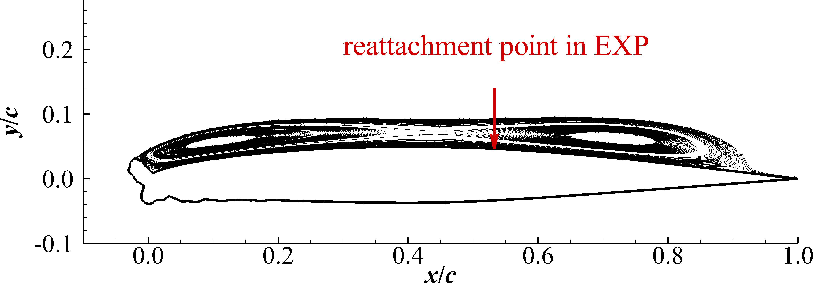
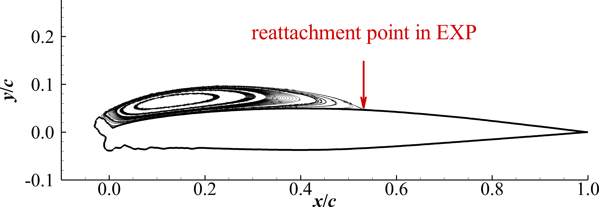
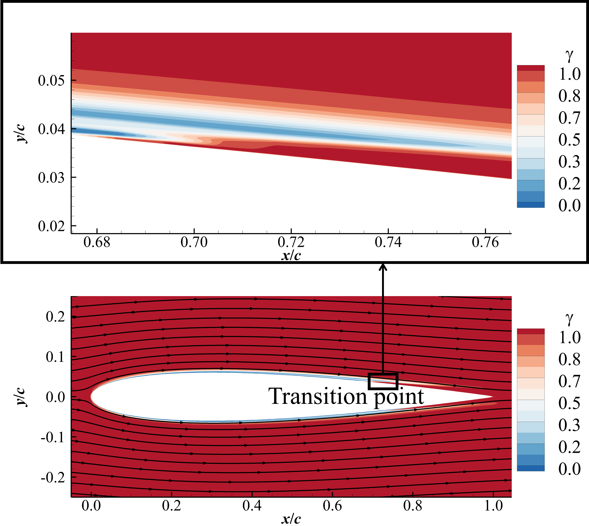
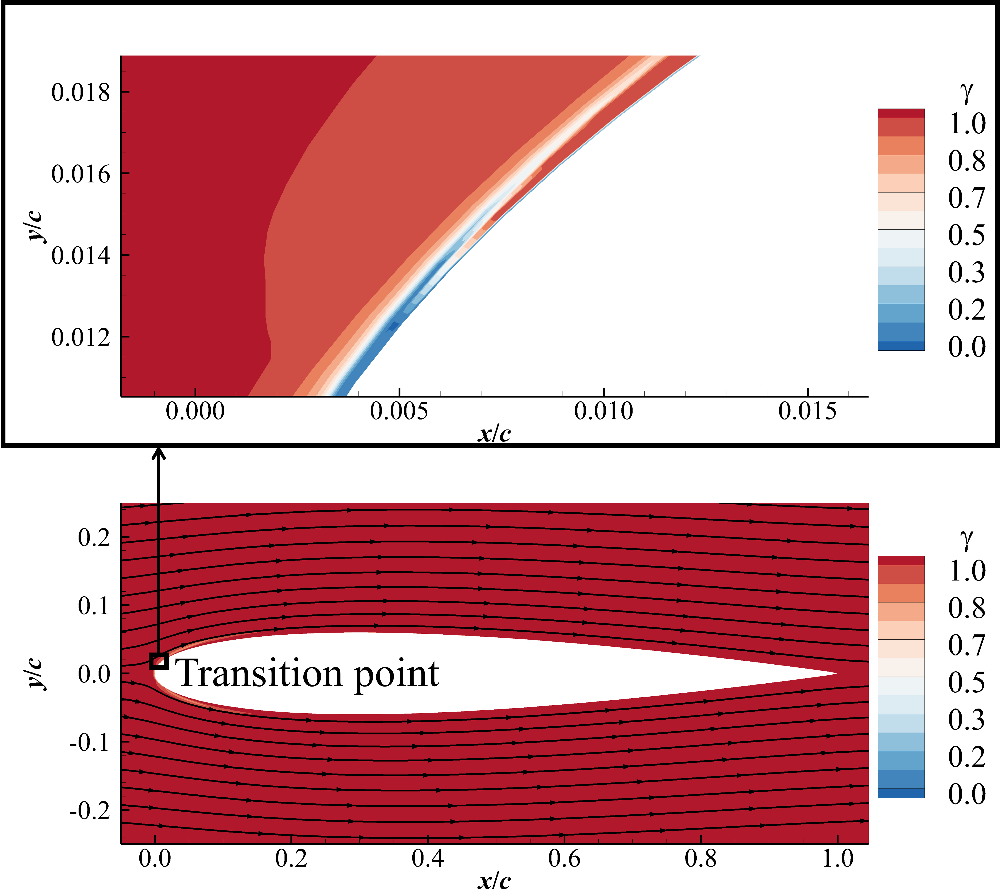
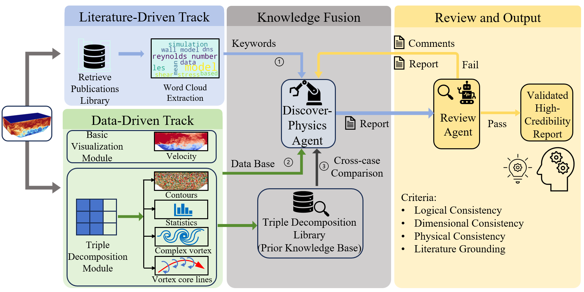
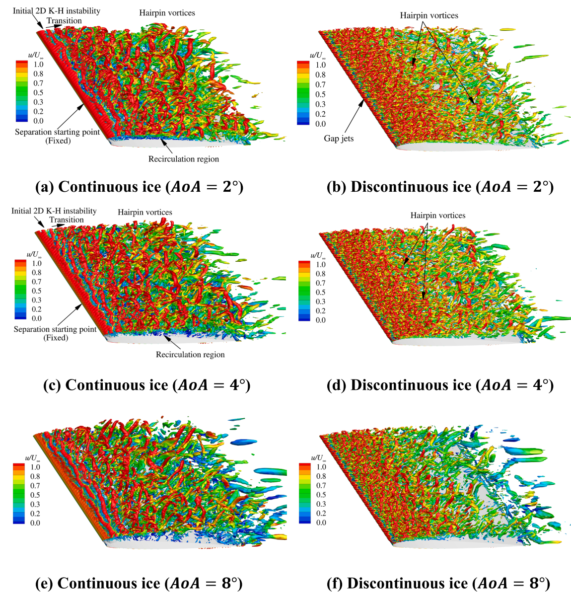

Research
Representative projects spanning aerodynamic icing simulation, generative AI for unsteady aerodynamics, and large language model-driven physics discovery.
Turbulence model development for large separation correction and roughness effects simulation
We have published seven peer-reviewed journal papers directly developing and validating turbulence models for large separation and roughness effects. A key contribution is the development of the SRF (Separating Shear-Layer and Roughness Fix) γ-Reθt model, which incorporates both large-separation correction and roughness-effect modeling. The model has been extensively validated in a range of separated and rough-wall flow cases, demonstrating improved predictive capability for both flow separation and roughness-induced transition. This work was published in Physics of Fluids and was selected as an Editor's Pick. The SRF γ-Reθt model has subsequently been applied to ice-accretion simulations and has successfully predicted the complex flow fields around iced airfoils and wings. The underlying modeling framework for large-separation correction and roughness treatment has proven effective and can be extended to other turbulence models, such as the k-ω-γ model.

(a) SST

(b) γ-Reθt model

(c) SRF γ-Reθt model
Fig. 1 Separation prediction using different turbulence models

(a) γ-Reθt model

(b) SRF γ-Reθt model
Fig. 2 Earlier transition using SRF γ-Reθt model
Generative Learning for Unsteady Aerodynamics over Iced Airfoils
This paper employs a transformer–diffusion framework to predict the spatiotemporal evolution of unsteady flow separation over an iced airfoil. The training dataset is generated using high-fidelity URANS simulations of an iced airfoil profile across a range of Reynolds numbers and angles of attack. The generalization capability of the framework is systematically evaluated by predicting flow conditions excluded from the training set, including different angles of attack and different Reynolds numbers. Three flow variables---streamwise velocity, transverse velocity, and pressure---are simultaneously predicted. The predictive performance is assessed through instantaneous flow field comparisons, surface pressure coefficient distributions, integral aerodynamic force coefficients, and point-wise unsteady flow histories within the separation region.
The contributions of this work lie in adapting and extending the G-LED framework to the challenging problem of unsteady separated flow over iced airfoils, which involves: (1) simultaneous prediction of three flow variables (streamwise velocity, transverse velocity, and pressure); (2) a dedicated geometry-aware preprocessing strategy for the body-fitted C-type computational mesh of iced-airfoil geometries; and (3) a systematic evaluation of generalization capability across unseen angles of attack and Reynolds numbers for an aerodynamically relevant icing scenario.
PhysMiner: Large Language Model for Physics Discovery in Turbulence
Uncovering the physical mechanisms of turbulent flows remains a fundamental challenge in fluid mechanics. In particular, conventional velocity-gradient analysis methods suffer from shear contamination, which hinders accurate identification of the dominant physical mechanisms. This study presents PhysMiner, an automated framework integrating the triple decomposition method of the velocity gradient tensor with large language model-driven reasoning for turbulence-physics discovery. The triple decomposition module automatically decomposes flow fields into rigid rotation, pure shearing, and normal straining components, enabling statistical analysis, contour visualization, vortex-line extraction, and threshold-insensitive vortex identification while eliminating shear contamination. These automated capabilities are validated across five benchmarks, ranging from canonical configurations to complex engineering flows. A discover-physics agent combines flow statistics, spatial structures, and literature-derived knowledge to perform pattern recognition and physical inference, while a review Agent iteratively validates physical consistency to ensure reliable conclusions. A continuously evolving Triple Decomposition Library accumulates statistical knowledge from successfully analyzed flows, enabling cross-case comparison and progressive enhancement of inductive capability. The complete PhysMiner pipeline is validated end-to-end on the periodic hill flow, where the framework autonomously generates turbulence modeling recommendations and derives an improved subgrid-scale model with superior Reynolds-stress predictions. PhysMiner is open to the public and establishes a foundation for long-term collaborative advancement in automated turbulence-physics discovery.

Fig. 1 Overview of the PhysMiner framework.
IDDES method for complex geometry flows: iced wings
This study investigates the aerodynamic performance and flow structures of infinite swept wings with artificially simulated discontinuous ice using an enhanced delayed detached-eddy simulation. Comparisons are made among clean, continuous-ice, and discontinuous-ice configurations. Results show that discontinuous ice causes a more severe reduction in lift than continuous ice. While continuous ice forms a large separation bubble that helps maintain lift, discontinuous ice disrupts leading-edge vortex formation through gap jets, resulting in greater lift loss but a smaller drag penalty. Unlike the continuous-ice wing, the discontinuous-ice case does not exhibit a sudden stall-induced lift drop. The flow over the discontinuous-ice wing can be characterized by two canonical patterns: a separating shear layer and Kármán vortex shedding. However, the separating shear layer becomes irregular due to the interference of gap jets. Three characteristic chord-based Strouhal numbers (St)—11.3, 22.6, and 33.9—are identified. The lowest (St = 11.3) corresponds to the shedding of vortex pairs; when nondimensionalized by the ice width, it yields St = 0.58, which is higher than that of a canonical cylinder wake. Furthermore, lift and drag fluctuations occur predominantly at St = 22.6, twice the shedding frequency, primarily induced by the gap jets—a phenomenon absent in the continuous-ice case.
Fig. 1 Ice accretion on a swept wing at glaze-ice conditions, complete scallop (Vargas, 2007).

Fig. 2 Grid for the infinite-span swept wing with discontinuous ice.

Fig. 3 Evolution of vortex structures over swept wings with different leading-edge configurations.
JAX-solver: A Differentiable Flow Solver
I am currently developing a differentiable computational fluid dynamics solver built on JAX, aimed at enabling gradient-based optimization and machine-learning-augmented turbulence modeling directly within the flow solver. The examples below show two flow cases computed with the solver in its current stage of development. As this work is still in progress and has not yet been published, further methodological details are withheld for now.
Decaying isotropic turbulence simulated with JAX-solver.
Turbulent channel flow simulated with JAX-solver.